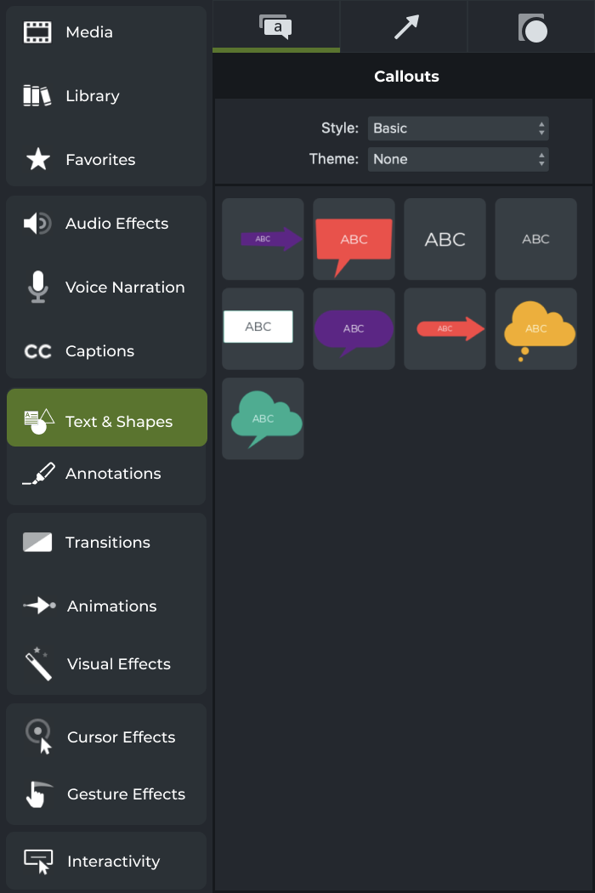
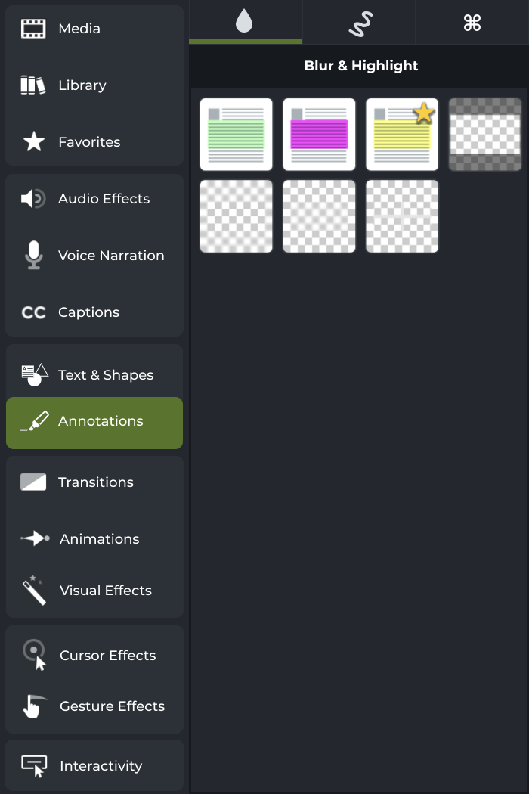
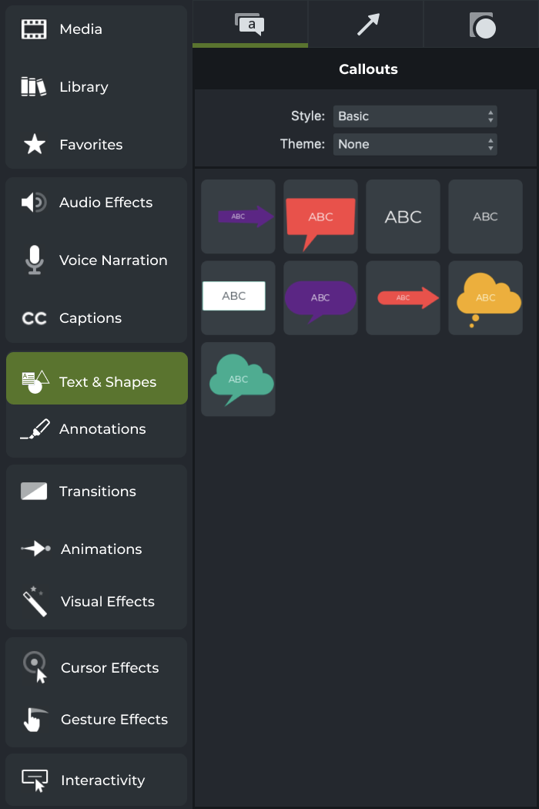
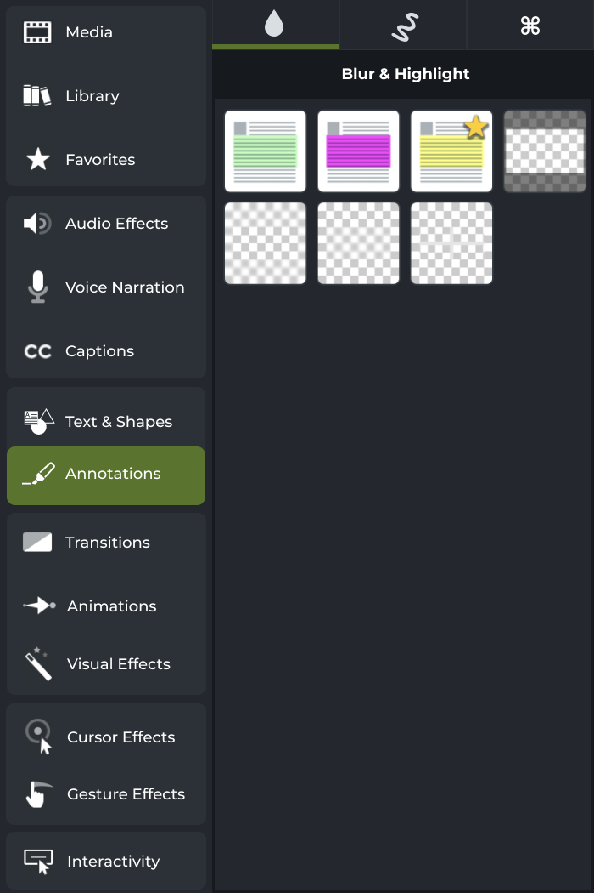

During past usability testing sessions, TechSmith designers have noticed that there is always some percent of users that have a difficult time finding callouts and arrows, which are one of Camtasia’s core capabilities. They also recognized that they may have too many categories, possibly at different levels of specificity.
Partnering with MSU, the Experience Architecture program, and Dr. Ann Burke, our class, Introduction to Experience Architecture (XA 242) was tasked to help TechSmith with a UI/UX revamp of their software.
To help regular users of Camtasia to quickly and efficiently find tools that would be useful to them so they can spend less time on the video editing process.
We started looking at solutions by familiarizing the software, reviewing prior and current usability data, checking community forums and support discusssions, and performing a toolbar architecture analysis. By doing so, we came up with three (3) distinct design tasks/challenges:
 



Text and Shapes
Annotations
Animations
After considering the design challenges mentioned above, we came up with this prototype of a restructured and redesigned toolbar for TechSmith’s Camtasia.
The TechSmith client project has been both a challenge and a profound learning opportunity for me. As the culmination of all the lessons we’ve learned during the Intro to Experience Architecture class, the client project tested my ability to work on and use foundational concepts of user experience research and analysis. I am grateful to have an opportunity to lead a team and work with real-world clients in this project.